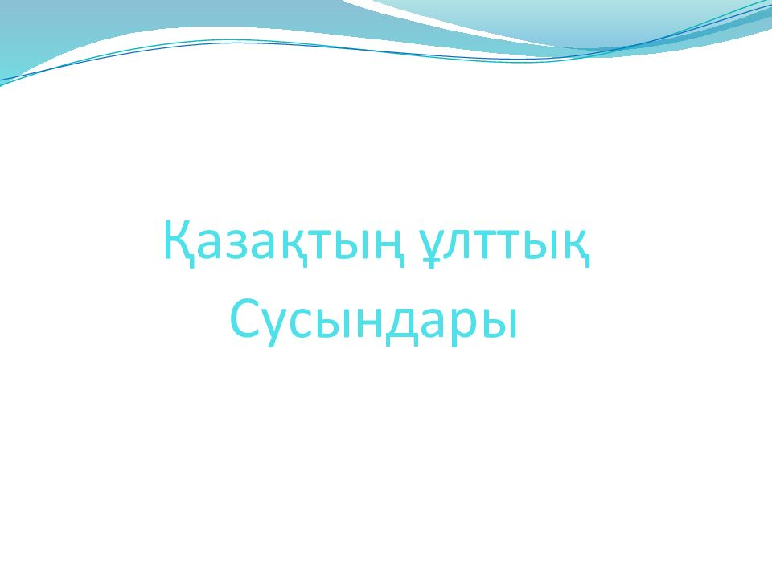
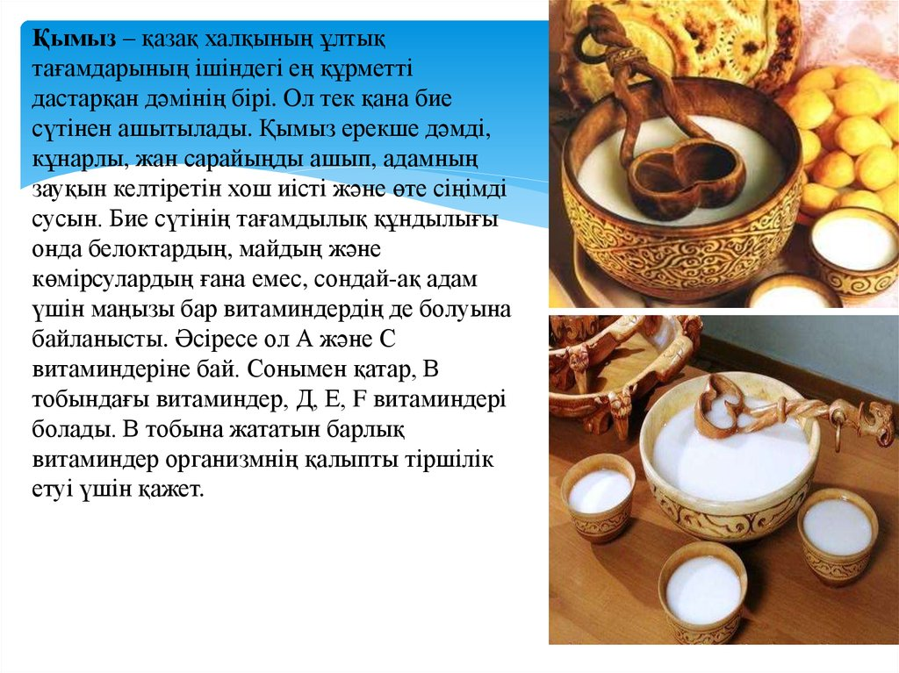
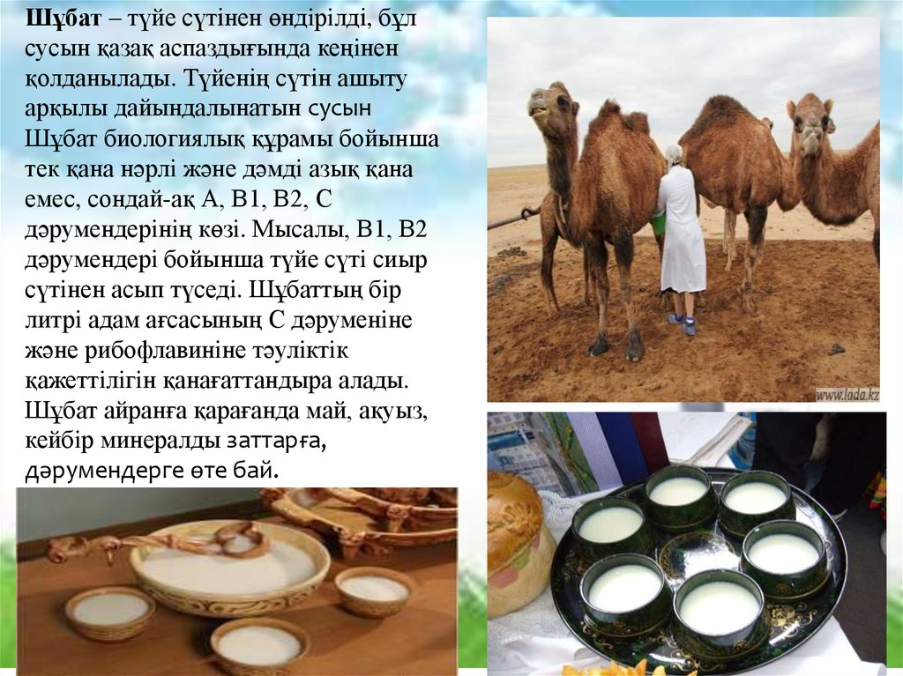
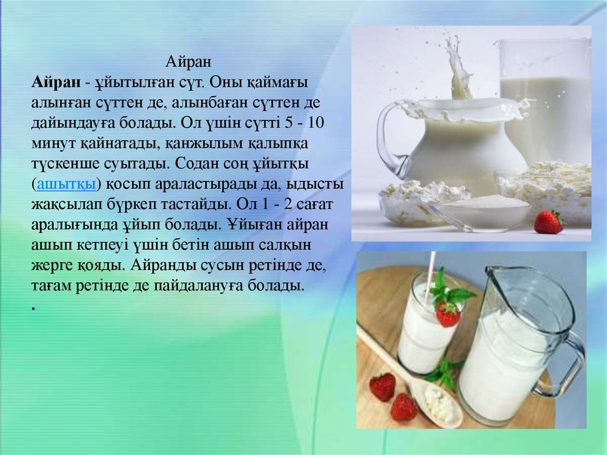

Қымыз

Шұбат

Айран

Көбінесе қойдың, ешкі мен сиырдың қаймағы алынбаған сүтінен ұйытқан аса қою айран. Оны әзірлеу әдісі былай: піскен сүт қан жылым дәрежесіне дейін салқындатылады да, бұрынғы айраннан ұйытқы құйып (бір шелекке бір кесе) араластырады, одан кейін бетін қымтап жауып қояды. Ұйыған уақытта қатықтың бетін (жазда 2-3 сағат, күзге таман салқын түскен кезде 3-4 сағатта) ашып, біраз салқындатады. Жақсы ұйыған қатыққа шанышқан қасық тік тұрады. Оның қатық аталуы да осыдан. Ал бабына келмеген қатық қатық саналмайды. Аспазға сын қойылады. Қатықты сол күйінде ішеді. Бұл — қарын аштырмайтын өте жұғымды әрі сіңімді тағам.
Шалап
Айранға суық су қосып сапырып, шөлдегенде ішетін сусын. Айран-шалап деп кейде жалпы ақты да атаған.
Қымыран
Қымыран — сүттен ашытылып жасалған сұйық тамақ — айранның бір түрі немесе түйенің шұбаты мен сиыр сүтінің араласы. Ғылыми дәйектерге жүгінсек, қазақтың қымыраны әлемнің шөлін қандыруға қауқарлы, халықаралық нарықта бәсекеге бәс тігуге қабілетті, сондай-ақ талай дертке дауа болар қасиеттері де баршылық.